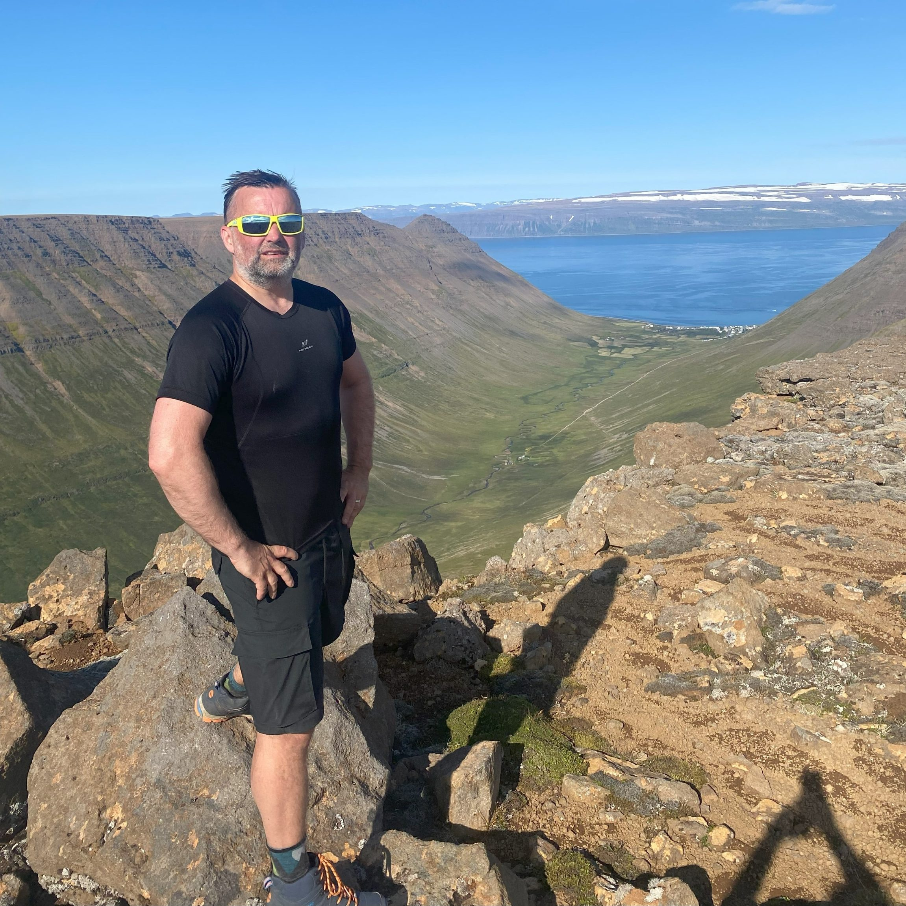
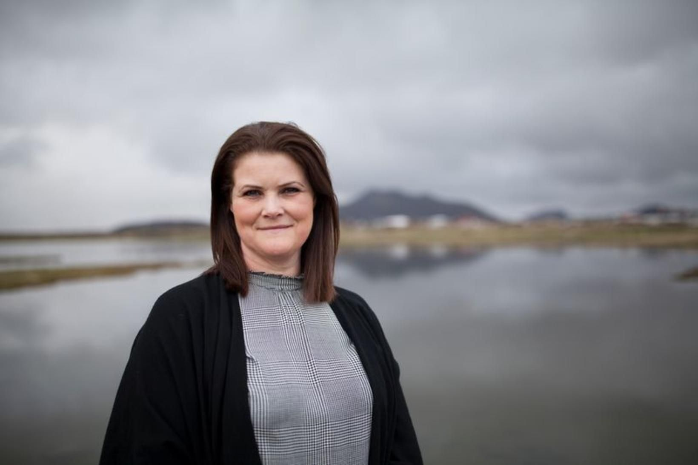
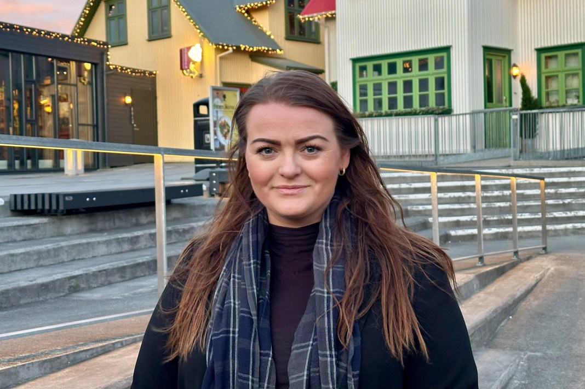
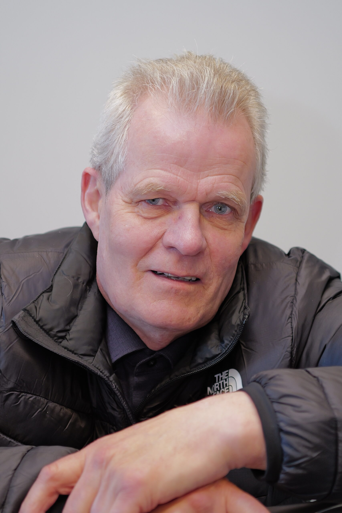
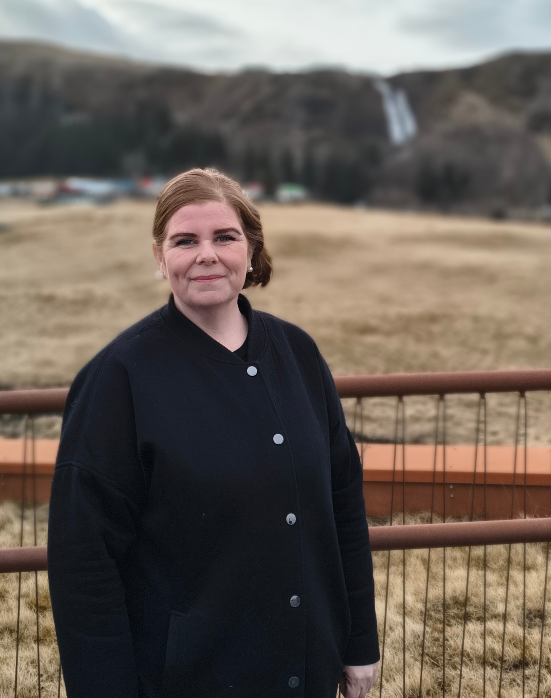
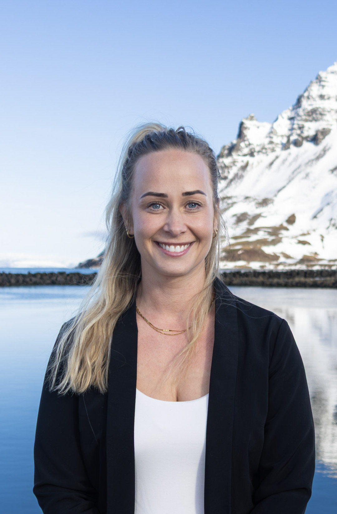

🗳️ Scan Review — 2026-05-01
All results from today’s scanning session, awaiting approval before being applied to the main site.
0 bios written
0 news articles across 0 candidates
0 party platforms found
32 found photos
⚠️ Nothing has been applied to the live site yet. Review below, then give approval.
📝 Biographies 0
No bio results file found.
📰 News Articles 0 articles · 0 candidates
No news results file found.
📋 Party Platforms 0
⚠️ Policy scan results have been removed pending a re-scan with stricter source verification.
Only platforms with clearly verifiable online sources will be included.
📷 Photos 32 found
Sunna Hlín Jóhannesdóttir
images/candidates/0ea64b00a8d5ef12.png
Þuríður Lillý Sigurðardóttir
images/candidates/fd5d2cd8736245ec.jpg
Einar Eðvald Einarsson
images/candidates/6aca80cd0021616e.jpg
Anton Kristinn Guðmundsson
images/candidates/28483d7759d57677.jpg

Davíð Sigurðsson
images/candidates/0e5fc9d381e5a5a3.jpg

Kristján Þór Kristjánsson
images/candidates/b7b5dded621ec907.jpg
Monika Margrét Stefánsdóttir
images/candidates/9ba5eca71f7baf76.png
Birgir Örn Ólafsson
images/candidates/e8bab110da9413f5.jpg
Grímur Rúnar Lárusson
images/candidates/5545067276b85462.jpg

Haraldur Benediktsson
images/candidates/f45a567193a4cb9b.jpg

Ásrún Helga Kristinsdóttir
images/candidates/e76d0eaffdcd2045.jpg

Þorgeir Pálsson
images/candidates/3bd6c57c31acc7a6.jpg

Kolbrún Magnúsdóttir
images/candidates/31084ab6c2e53184.avif

Ellý Tómasdóttir
images/candidates/974265ac722f7789.jpg
Sonja Lind Eyglóardóttir
images/candidates/5be7cbd8c3b69b40.jpg
Gunnar Sær Ragnarsson
images/candidates/08926d003567b845.png
Sverre Andreas Jakobsson
images/candidates/788c32ee2b6d0890.png
Helga Rakel Arnardóttir
images/candidates/b7688f4450c97963.png
Þórey Birna Jónsdóttir
images/candidates/be29281c8f6e16ed.jpg
Stefán Bragi Birgisson
images/candidates/1d33df50c3714441.jpeg
Valborg Ösp Á. Warén
images/candidates/19af948f7c0d4e9c.jpg
Urður Arna Ómarsdóttir
images/candidates/bc53696fc81ae7fe.jpg
Ásrún Ýr Gestsdóttir
images/candidates/d36cd11f5267f72c.jpg
Davíð Arnar Stefánsson
images/candidates/3d386d6c90c078cf.jpg

Þorbjörn Halldór Jóhannesson
images/candidates/ec3af4ec0076c7d6.jpg
Erla Sigurðardóttir
images/candidates/99330502a8405f75.jpg

Helgi Páll Gíslason
images/candidates/827ba56248b7aef7.png

Hulda Birna Helgadóttir Blöndal
images/candidates/034fb5f272a45b03.jpg

Auðbjörg Brynja Bjarnadóttir
images/candidates/f3fee0151861a072.jpg

Sigvaldi Gunnlaugsson
images/candidates/39b7384e4683a730.jpg
Aðalsteinn Jósepsson
images/candidates/320b5b583ab7e3f1.jpg

Rebekka Líf Karlsdóttir
images/candidates/97468c06b427ba0a.jpg